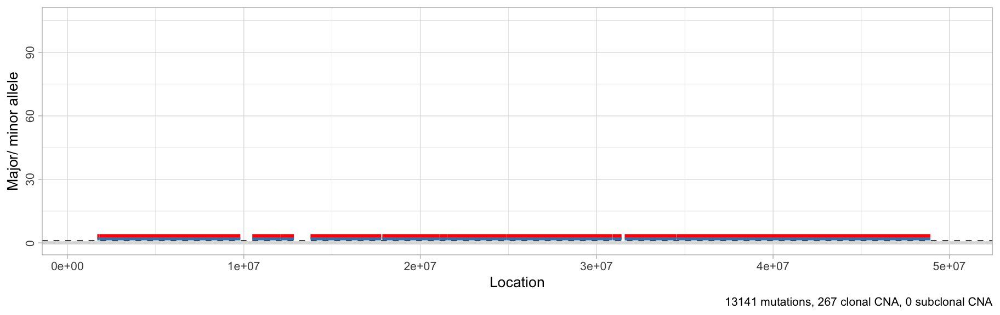
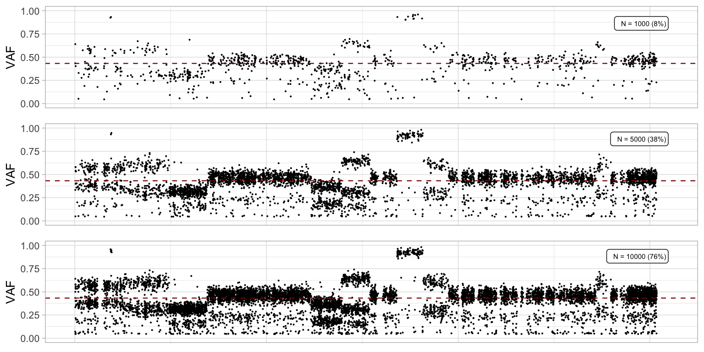
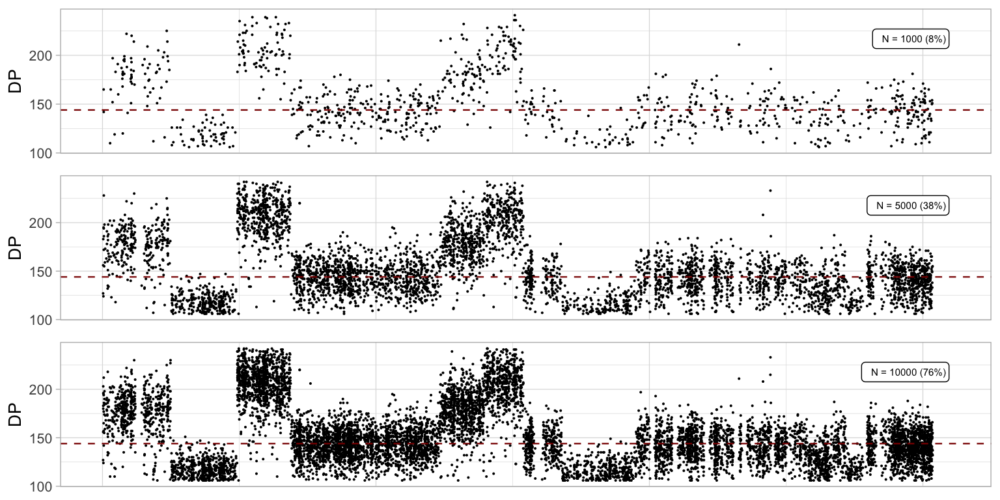

This vignette describes how to set-up your data into the CNAqc package.
library(CNAqc)
#> [ CNAqc - Copy Number Alteration quality check ]
#> Author : Giulio Caravagna <gcaravagn@gmail.com>
#> GitHub : caravagn/CNAqc
require(tidyverse)The input mutations must be a data.frame with:
-
chr,from,toashg19chromosome coordinates.- Chromosome names must be in the format
chr1,chr2, etc.;
- Chromosome names must be in the format
-
refandaltfor the reference and alternative alleles.- Alleles should be characters, the tool will use all available mutation types but we suggest to carry out QC with high-quality SNV data;
-
DP,NVandVAF(numeric) for- the base depth - total number of reads with both reference and alternative;
- the number of variants with the alternative allele;
- the allele frequency (
VAF = NV/DP).
The input CNAs must be a data.frame with:
chr,from,toashg19chromosome coordinates, (as for mutations);Majorandminorfor the number of copies of the major allele, and the minor (B-allele). A diploid segment will have tereforeMajor = minor = 1and will be denoted as1:1.- A
CCFcolumn can be used to represent the Cancer Cell Fractionsas (i.e., clonality of the segment) a real-value in between 0 and 1 to.- If this is not available,
CCF = 1is set assuming clonal segments. Otherwise, segments withCCF<1are considered subclonal CNAs.
- If this is not available,
To analyze the data, a purity value in between 0 and 1 is required to represent the proportion of actual tumour content (sometimes called “cellularity”).
The package comes with a template dataset available.
data('example_dataset_CNAqc', package = 'CNAqc')
print(example_dataset_CNAqc)
#> $snvs
#> # A tibble: 13,141 x 51
#> chr from ID ref alt QUAL FILTER INFO id DP NV
#> <chr> <chr> <chr> <chr> <chr> <chr> <chr> <chr> <chr> <dbl> <dbl>
#> 1 chr1 1027… <NA> T G 1.73… PASS DP=8… chr1… 60 6
#> 2 chr1 2248… <NA> A C -0 PASS DP=1… chr1… 127 9
#> 3 chr1 2461… <NA> G A 225 PASS DP=1… chr1… 156 65
#> 4 chr1 2727… <NA> T C 225 PASS DP=1… chr1… 180 90
#> 5 chr1 2763… <NA> C T 225 PASS DP=1… chr1… 183 61
#> 6 chr1 2768… rs18… C T 225 PASS DP=2… chr1… 203 130
#> 7 chr1 2935… <NA> C T 225 PASS DP=2… chr1… 228 132
#> 8 chr1 2980… <NA> C T 225 PASS DP=2… chr1… 196 85
#> 9 chr1 3387… <NA> T G -0 PASS DP=1… chr1… 124 6
#> 10 chr1 3502… rs11… G A 0.00… PASS DP=9… chr1… 88 10
#> # … with 13,131 more rows, and 40 more variables: VAF <dbl>,
#> # `/icgc/dkfzlsdf/project/hipo/hipo_043/sequencing/whole_genome_sequencing/view-by-pid/H043-W99H5K/tumor/paired/merged-alignment/.merging_0/tumor_H043-W99H5K_merged.mdup.bam` <chr>,
#> # SEQUENCE_CONTEXT <chr>,
#> # `INFO_control(VAF=variant_allele_fraction;TSR=total_variant_supporting_reads_incl_lowqual)` <chr>,
#> # ANNOTATION_control <chr>, DBSNP <chr>, `1K_GENOMES` <chr>,
#> # ANNOVAR_FUNCTION <chr>, GENE <chr>, EXONIC_CLASSIFICATION <chr>,
#> # ANNOVAR_TRANSCRIPTS <chr>, SEGDUP <chr>, CYTOBAND <chr>,
#> # REPEAT_MASKER <chr>, DAC_BLACKLIST <chr>, DUKE_EXCLUDED <chr>,
#> # HISEQDEPTH <chr>, SELFCHAIN <chr>, MAPABILITY <chr>,
#> # SIMPLE_TANDEMREPEATS <chr>, CONFIDENCE <chr>, RECLASSIFICATION <chr>,
#> # PENALTIES <chr>, seqBiasPresent_1 <chr>, seqingBiasPresent_1 <chr>,
#> # seqBiasPresent_2 <chr>, seqingBiasPresent_2 <chr>, Enhancers <chr>,
#> # CpGislands <chr>, TFBScons <chr>, ENCODE_DNASE <chr>,
#> # miRNAs_snoRNAs <chr>, miRBase18 <chr>, COSMIC <chr>,
#> # miRNAtargets <chr>, CgiMountains <chr>, phastConsElem20bp <chr>,
#> # ENCODE_TFBS <chr>, blacklist <chr>, to <dbl>
#>
#> $cna
#> # A tibble: 482 x 19
#> chr from to length covRatio TCN SV.Type c1Mean c2Mean dhEst
#> <chr> <int> <int> <int> <dbl> <dbl> <fct> <dbl> <dbl> <dbl>
#> 1 chr1 8.40e5 1.69e6 8.50e5 1.19 5.05 <NA> 2.02 3.03 0.199
#> 2 chr1 1.69e6 1.82e6 1.25e5 1.26 5.38 <NA> 2.19 3.19 0.185
#> 3 chr1 1.82e6 9.80e6 7.98e6 1.19 5.05 <NA> 2.02 3.03 0.199
#> 4 chr1 9.80e6 9.87e6 7.50e4 1.26 5.38 <NA> NA NA NA
#> 5 chr1 9.87e6 1.05e7 6.05e5 1.24 5.29 <NA> NA NA NA
#> 6 chr1 1.05e7 1.21e7 1.60e6 1.19 5.05 <NA> 2.02 3.03 0.199
#> 7 chr1 1.21e7 1.22e7 7.51e4 1.24 5.29 <NA> 2.04 3.25 0.229
#> 8 chr1 1.22e7 1.28e7 6.85e5 1.19 5.05 <NA> 2.02 3.03 0.199
#> 9 chr1 1.38e7 1.78e7 4.01e6 1.19 5.05 <NA> 2.02 3.03 0.199
#> 10 chr1 1.78e7 1.78e7 5.99e4 1.26 5.38 <NA> NA NA NA
#> # … with 472 more rows, and 9 more variables: dhSNPs <dbl>, Major <chr>,
#> # minor <chr>, CNA.type <fct>, NbrOfHetsSNPs <int>, minStart <int>,
#> # maxStart <int>, minStop <int>, maxStop <int>
#>
#> $purity
#> [1] 0.89To sue the package, you need to initialize a cnaqcobject mapping mutations to chromosomes.
# Use SNVs, CNAs and tumour purity
x = CNAqc::init(
example_dataset_CNAqc$snvs,
example_dataset_CNAqc$cna,
example_dataset_CNAqc$purity)
#> [ CNAqc - CNA Quality Check ]
#> Warning in enforce_numeric(x$from): [CNAqc] Enforcing numeric for values:
#> 1027104, 2248588, 2461999, 2727935, 2763397, 2768208, ...
#> [CNAqc] Missing CCF column from CNA calls, adding CCF = 1 assuming all calls to be clonal.
#> Warning in enforce_numeric(x$Major): [CNAqc] Enforcing numeric for values:
#> 3, 3, 3, NA, NA, 3, ...
#> Warning in enforce_numeric(x$Major): NAs introduced by coercion
#> Warning in enforce_numeric(x$minor): [CNAqc] Enforcing numeric for values:
#> 2, 2, 2, NA, NA, 2, ...
#> Warning in enforce_numeric(x$minor): NAs introduced by coercion
#>
#> Input n = 13141 mutations for 482 CNA segments (482 clonal, 0 subclonal)
#>
#> Mapping mutations to clonal CNA.
#>
#> Mapping. n = 13050 mutations mapped to segments (~99% of input)
#> [CNAqc] The following segments have Major/ minor alleles in non-numeric format or NAs
#> # A tibble: 215 x 20
#> chr from to length covRatio TCN SV.Type c1Mean c2Mean dhEst
#> <chr> <int> <int> <int> <dbl> <dbl> <fct> <dbl> <dbl> <dbl>
#> 1 chr1 9.80e6 9.87e6 75009 1.26 5.38 <NA> NA NA NA
#> 2 chr1 9.87e6 1.05e7 604933 1.24 5.29 <NA> NA NA NA
#> 3 chr1 1.78e7 1.78e7 59936 1.26 5.38 <NA> NA NA NA
#> 4 chr1 3.09e7 3.09e7 14969 1.24 5.29 <NA> NA NA NA
#> 5 chr1 3.14e7 3.16e7 179994 1.24 5.29 <NA> NA NA NA
#> 6 chr1 3.45e7 3.45e7 20049 1.26 5.38 <NA> NA NA NA
#> 7 chr1 5.04e7 5.04e7 44976 1.24 5.29 <NA> NA NA NA
#> 8 chr1 5.19e7 5.19e7 24947 1.27 5.43 <NA> NA NA NA
#> 9 chr1 6.13e7 6.13e7 39974 1.24 5.29 <NA> NA NA NA
#> 10 chr1 6.84e7 6.84e7 20002 1.24 5.29 <NA> NA NA NA
#> # … with 205 more rows, and 10 more variables: dhSNPs <dbl>, Major <dbl>,
#> # minor <dbl>, CNA.type <fct>, NbrOfHetsSNPs <int>, minStart <int>,
#> # maxStart <int>, minStop <int>, maxStop <int>, CCF <dbl>
#> These CNA segments will be removed.The summary of the object is available via the S3 print function, reporting some basic statistcs of the data.
print(x)
#> CNAqc n = 13141 mutations for 267 CNA segments (267 clonal, 0 subclonal)
#> Purity 89 cellularity
#> Karyotypes 7478 (2:2); 1893 (4:2); 1625 (3:2); 1563 (2:1); 312 (3:0); 81 (2:0); 67 (NA:NA); 16 (NA:2); 4 (104:NA); 4 (16:2); 2 (25:2); 2 (3:1); 1 (106:1); 1 (26:2); 1 (99:1)
#>
#> Peaks QC FALSETo view the segments, the tool maps CNA calls to the hg19 human genome coordinates and plots the major and minor alleles for each segment. The returned ggplot object can be modified.

# Reduce y-axis
plot_segments(x) + ylim(-1, 6)
#> Warning: Removed 10 rows containing missing values (geom_segment).
# Reduce x-axis
plot_segments(x) + xlim(1e6, 50e6)
#> Scale for 'x' is already present. Adding another scale for 'x', which
#> will replace the existing scale.
#> Warning: Removed 24 rows containing missing values (geom_rect).
#> Warning: Removed 24 rows containing missing values (geom_vline).
#> Warning: Removed 24 rows containing missing values (geom_label).
#> Warning: Removed 252 rows containing missing values (geom_segment).
#> Warning: Removed 252 rows containing missing values (geom_segment).
Genome-wide plots that follow the layout of plot_segments are avaiable to view the number of mutations, their VAF and depth. VAF and depth-plotting functions (scatterplots) can subset the input data to speed up rendering - by default 5000 points are randomly sampled. Counts plot bin locations by one megabase.
# All genome, all data - counts of mutations per megabase
plot_counts(x)
#> Warning: Removed 2 rows containing missing values (geom_bar).
# Different subsamples
ggpubr::ggarrange(
plot_vaf(x, N = 1000),
plot_vaf(x),
plot_vaf(x, N = 10000),
ncol = 1
)
# Different subsamples
ggpubr::ggarrange(
plot_depth(x, N = 1000),
plot_depth(x),
plot_depth(x, N = 10000),
ncol = 1
)
A one-summary plot can be easily assembled exploiting the above functions and functions from cowplot or other ggplot-manipulation packages.
cowplot::plot_grid(
plot_counts(x),
plot_vaf(x, N = 10000),
plot_depth(x, N = 10000),
plot_segments(x) + ylim(-1, 6),
align = 'v',
nrow = 4,
rel_heights = c(.15, .15, .15, .8))
#> Warning: Removed 2 rows containing missing values (geom_bar).
#> Warning: Removed 10 rows containing missing values (geom_segment).
The total number of
For CNAs, it is possible to show the segments per karyotypes, reporting either their counts, or the proportion of genome covered.
ggpubr::ggarrange(
CNAqc::plot_karyotypes(x),
CNAqc::plot_karyotypes(x, type = 'number'),
common.legend = TRUE,
legend = 'bottom'
)